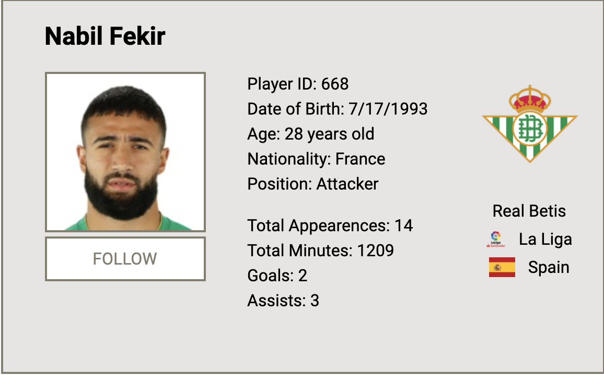

Home
Welcome to our project. We are bringing you an easy way to keep up with your favorite players.
Just go to the players tab and start looking for the player you want, with just his name and the competition he plays in.

This is an example of what a player search would look like,
with all the information about that players, including his profile
photo, and the team and league he plays for, and his stats.